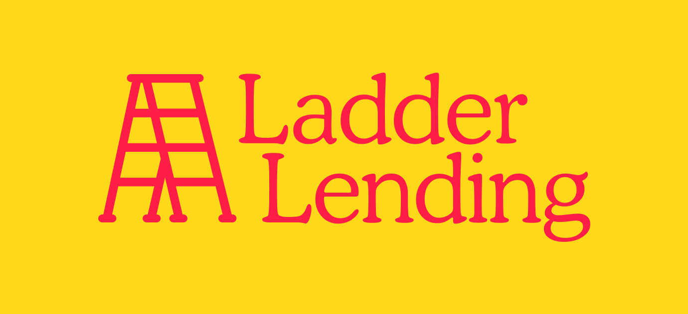
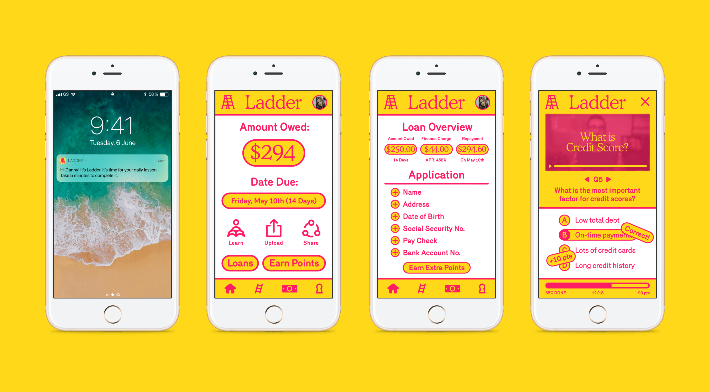
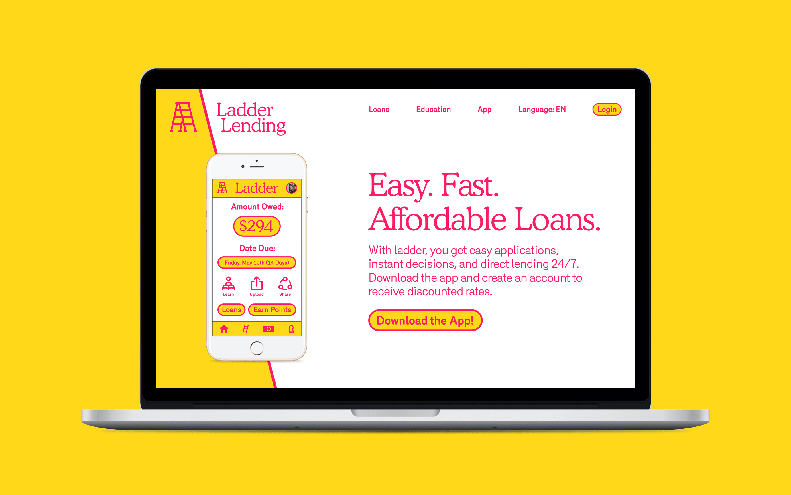
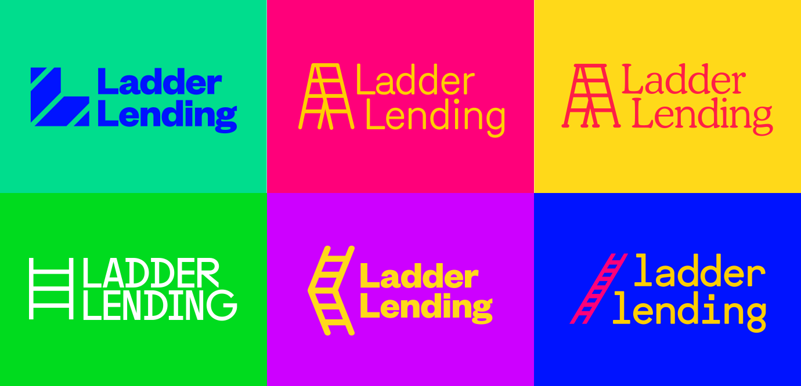

Merl Studio
INDEX
Ladder Lending aims to use digital educational tools to help people break the cycle of “just getting by.”

Ladder Lending aims to use digital educational tools to help people break the cycle of “just getting by.”


Our process heavily involved unpacking and iterating on different variations of ladders and attitudes and whatnot.
